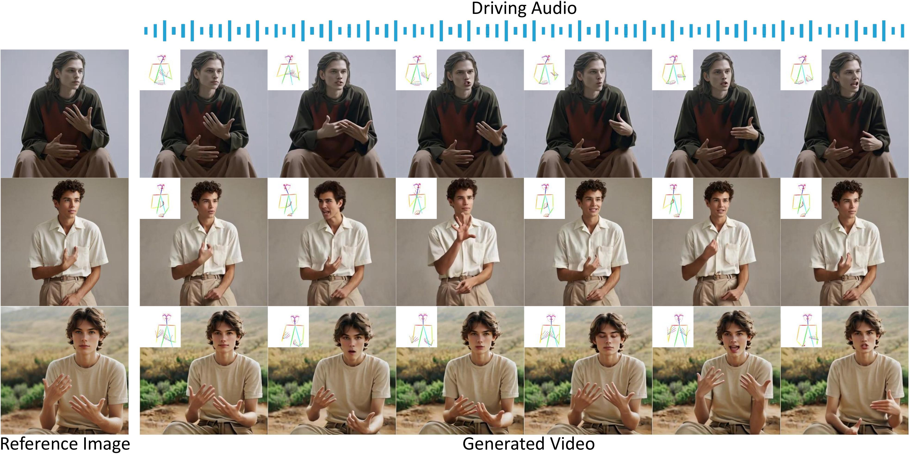

About Me
Hi! I'm Xu Yang (杨煦), a master's student at South China University of Technology (SCUT), expected to graduate in June 2026. I obtained my bachelor's degree from Chongqing University (CQU).
I am currently interning at the GenAI team of ByteDance, working on autoregressive audiovisual generation and human-centric AIGC.
I am open to research collaborations and discussions. Feel free to reach out!
Publications
(*: equal contribution; #: corresponding author)

Experience
ByteDance - GenAI (商业化)
Autoregressive audiovisual generation: context compression, long video stable generation, multi-shot inference. AI Agent workflow for research efficiency.
ByteDance - Intelligent Creation
Voice clone in audiovisual generation model. Multi-speaker dataset annotation.

Tencent AI Lab - Digital Human Center
Audio-driven talking human video generation. Large-scale dataset collection (147K clips, 405 hours). Published at ICCV 2025.
![HeyGen]()
HeyGen
Image-guided virtual try-on with diffusion models. Published at CVPR 2024.
Education
South China University of Technology (SCUT)
Research: 2D Human-Centric AIGC (Virtual Try-On, Talking Human Video Generation)
Chongqing University (CQU)
GPA: 3.68/4.0, Rank: 11/151 (Top 7.3%)